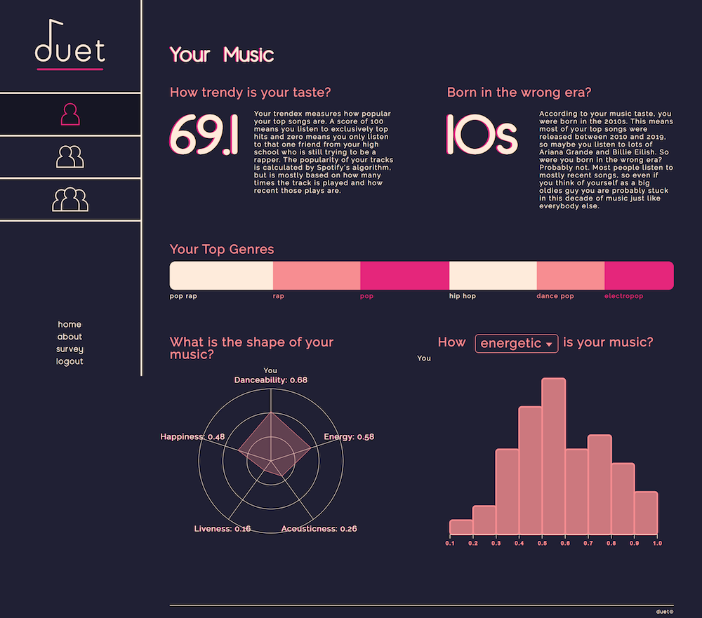
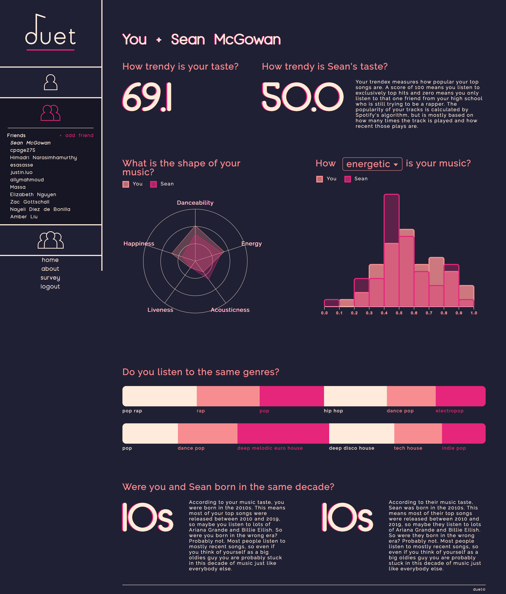

duet: in beta
the beginnings of a cohesive web app leveraging Spotify's API that creates a communal experience from your music listening history
We began building a web application to help people better understand themselves and their relationships with others based on the music they listen to. Spotify's API provides us with a lot of interesting data; it tells us our top artists, our top tracks, and it gives us audio analysis for all tracks. Our application will allow users to visualize their personal Spotify data and compare it to their friends and community in beautiful, meaningful ways.
First there is a personal dashboard:
Here, we leverage the attributes that Spotify's API returns based on a user's top songs and artists to visualize their listening history. We show the user the "shape" of their music, their trendex, their top genres, their attributes graphed, and their top decade.
Next, the option to compare with one friend:
Users can also add friends by searching other users who are currently in the system and compare their music to their friends' music. The visualizations on this page are the same as listed above, but placed side-by-side or overlayed on top of each other for comparison.
Finally, a survey we'd ask users to fill out to create more interesting visualizations:
Through the survey mapped to the user's listening data, we hope to build a database from which we can begin to create cool data journalism pieces.
The app is now entering it's second stage of development and we hope to implement the following after user testing:
1. First, we want to implement the group comparison feature to allows users to create and join groups then compare their music to the taste of the group overall.
2. We plan to add a robust sharing feature, so users can post specific graphs to their social media, including a link back to our site.
3. We also want to add an invite feature so users can easily invite their current Spotify friends and other friends via email.
4. Lastly, people enjoyed interactive visualizations most during demos, so we want to create more interactive data displays that people can use to explore their music.